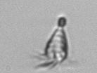

<div><h1>Tontonia_gracillima</h1></div>
-Note hook at opposite end than cilia-Sometimes hook can be facing towards or away-Length: 60 (30-90) µm<br>

<div style="display: inline-block">
IFCB1_2008_043_185649_01056<br>

</div>


<div style="display: inline-block">
IFCB1_2009_135_182511_02294<br>

</div>


<div style="display: inline-block">
IFCB1_2009_045_171409_00149<br>

</div>


